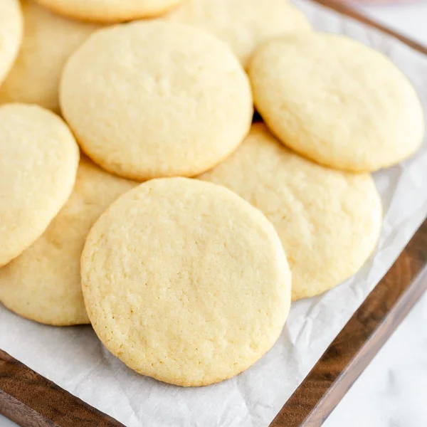
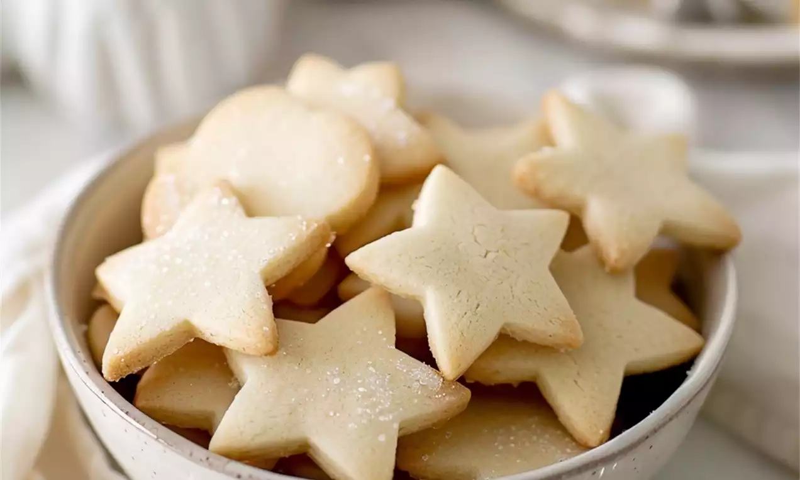
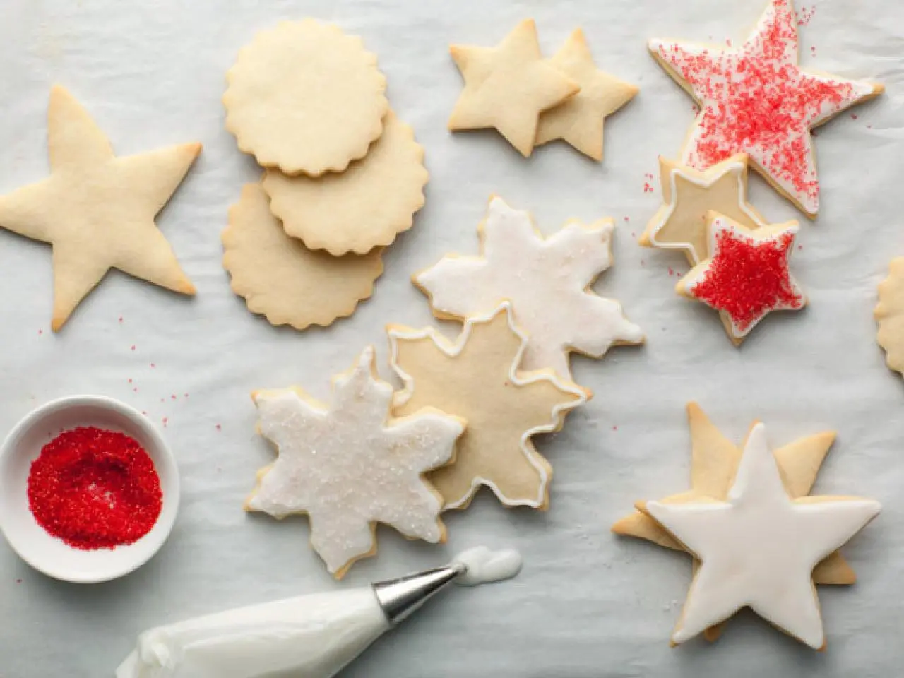

Cameron's Secret Sugar Cookie Recipe That Will Make You Come Back For Seconds
Article Published by Chef Cameron 02/08/2022 8:24 PM EST
The greatest cookies in the world!
Why These Cookies Taste So Great
It was a cool spring morning. I was given an assignment for a class to make a family recipe. However, my family does not have a signature recipe. Despite this fact, I resolved to use my baking skills to create the recipe for the perfect version of my favorite cookies, sugar cookies. And so, I got to work.
Baking Process
Using my intimate knowledge of baking, I spent hours combining ingredients in different amounts in an attempt to attain the perfect amount of fluffiness and the best flavor. This lead to me making over a dozen batches, until I finally found the one. A beautiful recipe for cookies so soft and luxurious you'd think they were bought from a bakery. So, knowing the recipe, I got to work making a batch to share with the class. I slowly mixed together the dry ingredients with my fork. However, I spilled the bowl, covering myself in flower. I removed my shirt, revealing my epic six-pack, and started over. I got the wet ingredients to combine, and slowly kneaded the dough.
Tips and Tricks
I caressed the supple cream-colored mass of dough slowly, as to not allow gluten to form. As the dough gets nice and soft, I can feel the sexual tension rising. I lean into the dough, and I whisper gently into it: "this is my swamp now". I start to kiss the dough, but I stop. "We can't do this" I say. "I'm man and you're cookie; this will never work". The dough falls gently on my hand, falling on my epic pinky ring. "Y-you really mean it? You want to get married?" I say timidly. The dough drops further onto my hand. "Then it's decided. Dough, w-will you marry me?" I say as the dough caresses my hand. We are now married with a dozen beautiful cookie children. Anyways, I hope you enjoyed this recipe.